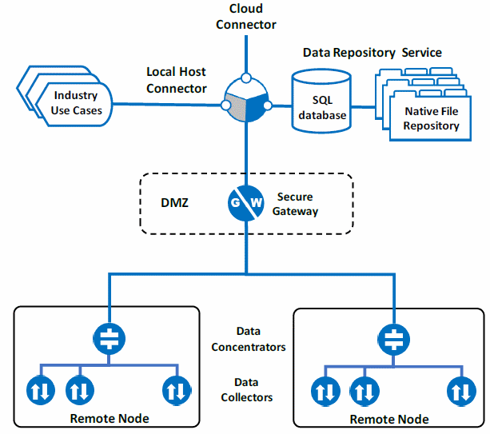
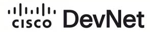

    <section>
        <div class="container">
            <div class="row">
                <div>
                    
                </div>
            </div>
            <div class="row">
                <div class="bg-primary" style="padding-top:5px; padding-bottom:5px; padding-left:15px;">
                    <h2 class="section-heading">FrameWorx</h2>
                </div>
            </div>
            <div class="row">
                <div class="col-lg-12 col-md-12 col-sm-12 col-xs-12">
                    <p class="text-left">
                        <b>FrameWorx</b> is Tarigma’s data acquisition platform for collecting actionable data from Industrial Internet of Things (IIoT) sources
                        across the enterprise, including a wide variety of sensors, actuators, programmable logic controllers (PLCs), and intelligent electronic
                        devices (IEDs) that populate the operational landscape of those enterprises.
                    </p>
                 </div>
            </div>

                <div class="row text-center">
                    
                    <p class="text-center">Figure 1 - FrameWorx Architecture</p>
                    <p>With reference to Figure 1 above, FrameWorx is comprised of a set of network-connected modules described below:</p>
                </div>

                <div class="row">
                    <div class="col-lg-6 col-md-6 col-sm-6 col-xs-12">
                        
                        <span class="text-primary larger"><b> Data Collector</b></span>
                        <p>The FrameWorx Data Collector is a network end-node that operates in conjunction with a large and growing family of vendor-specific and device-specific protocols to collect data from Intelligent Electronic Devices (IEDs). It can bind to local host ethernet ports, serial ports or external Remote Terminal Units (RTUs) to access devices via TCP or RS232, RS485 or RS422 using a variety of protocols including Modbus, IEC 60870-5, DNP3, IEC 60870-6-ICCP, IEC 61850, and the like. While some protocols support the receipt of unsolicited datagrams, most Collectors employ periodic polling of the device to determine when new events have occurred or new data is available. Since the Data Collector executes close to the device, the network traffic from high-frequency polling is localized and does not consume bandwidth over the wide-area network.</p>
                        <p>Once an event or transaction is detected, a time stamp and data packet is collected from the device, framed and buffered to local cache before it is queued for transport to the destination. This insures that each transaction will eventually reach its destination with the proper time context despite network delays or disruptions. A Configurator is available to setup each instance of the Collector, including settings for device addresses, protocol options, data subscriptions, and logging. Communication errors and state change messages are dispatched with priority.</p>
                        
                        <span class="text-primary larger"><b> Data Gateway</b></span>
                        <p>The FrameWorx Gateway is the component most involved in supporting the security policy of the enterprise. It is designed to be installed in the DMZ to relay traffic from the edge to the centralized end-node and to the cloud. The gateway may call upon a number of tools to implement security policy, including Secure Sockets Layer (SSL), tunneling and directionality. For example, the security policy may require the gateway to connect to all external nodes rather than allowing external nodes to connect to the gateway. Since this policy could require a single gateway to manage and instantiate hundreds or thousands of connections, FrameWorx developed the Data Concentrator (described below).</p>
                    </div>

                    <div class="col-lg-6 col-md-6 col-sm-6 col-xs-12">
                        
                        <span class="text-primary larger"><b> Data Concentrator</b></span>
                        <p>The FrameWorx Data Concentrator consolidates transactions from tens-to-hundreds of edge devices at a given substation or other regional facility and securely forwards them to the enterprise via the FrameWorx Gateway. This distributes the administrative burden of setting up and maintaining connections, greatly simplifying the implementation of a policy of directionality described above.</p>

                        
                        <span class="text-primary larger"><b> Data Repository Service</b></span>
                        <p>The FrameWorx Data Repository Service is a centralized end-node where all of the data and metadata being collected at the edge is routed and stored. Much of the incoming data has been preprocessed at the source according to industry standard or proprietary file formats that some higher-level applications or use cases can handle directly and, for that reason, those files are persisted directly to a folder structure on the file system. Examples of this include Comtrade files for oscillography, IEC Event files, relay settings, and firmware signatures. The balance of the data is persisted in an open, normalized, SQL database with metatag indexing for retrieval and consumption by a variety of centralized and/or cloud-based applications and use cases.</p>
                        <p>&nbsp;</p>
                        <p><b>NOTE:</b> Unlike SCADA which is focused on acquiring <u>operational</u> data about the electrical energy being distributed via the grid, Tarigma is focused on acquiring <u>non-operational</u> data, or data about the health, condition and configuration of the fixed assets that comprise the grid itself. Non-operational data, such as relay settings, cycle time vs. switched load, number of cycles, firmware revision, etc., is in most cases only accessible from an IED using vendor-proprietary protocols. As a result, Tarigma has developed a family of Data Collectors (see below) that support those proprietary protocols which operate in combination with other Collectors to gather the total datasets that are critical to the success of condition-based preventative maintenance programs and other Asset Performance Management (APM) use cases.</p>
                    </div>
                </div>


                <div class="row">
                    <p class="text-primary larger"><b>Deployment Options</b></p>
                    <dl>
                        <dt>Data Repository Service</dt>
                        <dd>The Data Repository Service (DRS) requires a Windows Server 2016 or later powered by a dual-core CPU at 800MHz or better with 4GB RAM and 1TB fixed storage minimum and 802.11 ethernet port.</p></dd>
                    </dl>
                    <dl>
                        <dt>Data Gateway, Concentrator & Collector</dt>
                        <dd>
                            The Data Gateway, Data Concentrator, and Data Collector modules can be deployed on a Windows 10 or Linux node powered by a single-core CPU at 800MHx or better with 1GB RAM with 4GB fixed storage available and dual 802.11 ethernet ports.
                        </dd>
                    </dl>
                    <div class="col-lg-2 col-md-2 col-sm-2 col-xs-4">
                        
                    </div>
                    <div class="col-lg-10 col-md-10 col-sm-10 col-xs-8">
                        <b>Note:</b> Tarigma has joined the Cisco Developer Network in order to port the Data Concentrator and Data Collector modules to Cisco IOx Operating System. When completed in the fall of 2019, this will allow FrameWorx data acquition modules to execute in a Linux “container” on Cisco’s family of Connected Grid Routers (CGR) for Substation deployment. This eliminates the need for additional hardware to host FrameWorx, positions it close to Edge devices in the Substation, and aligns it with centrally-administered security policy for CIP/NERC compliance.
                    </div>

                </div>
            </div>
    </section>
